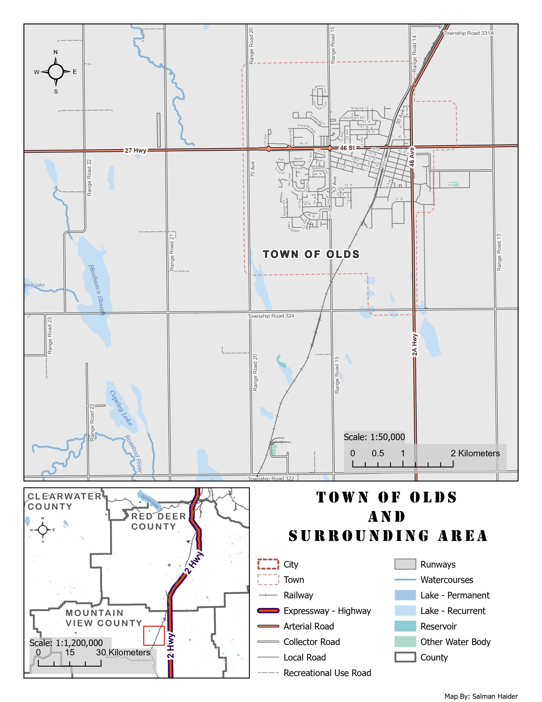

Cartography
Town of Olds reference map
I wanted this map to help someone unfamiliar with Olds understand how the town connects to the surrounding area. It needed to show the main routes into town while keeping local streets, water features and boundaries available for a closer look.
- Location
- Olds, Alberta
- Main map scale
- 1:50,000
- Base dataset
- CanVec, 2017
- Tools
- ArcGIS Pro, Label classes, Map layout design
Olds and surrounding area


Highway 27 and Highway 2A organise the main view. The inset shows Olds in relation to Highway 2 and the surrounding counties, allowing regional and local orientation on the same sheet.
Inspect details: Olds and surrounding areaFrom the regional network to local streets
I worked with CanVec roads, water features and boundaries in ArcGIS Pro. The main map shows the town at 1:50,000, while the smaller inset connects it to nearby counties and Highway 2. A reader can first locate the town regionally, then move into its named roads and surrounding landscape.
I used stronger colour and line weight for major roads and lighter grey for local streets. Labels and halos needed careful adjustment around the denser street network. I also offset the dashed town boundary where it met roads so that one feature did not obscure the other.
What the map helps someone find
The result gives residents or visitors a compact reference for the road network and the water features west and south of town. Highways remain easy to follow across the sheet without losing the smaller streets in the centre.
The closest symbol choices still deserve refinement. Collector and local roads look similar in places, as do some lake and reservoir colours. Increasing those differences would make the detailed reading easier while keeping the same overall hierarchy.
Data and references
- Natural Resources Canada, CanVec Series, 2017